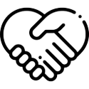
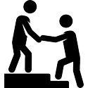

Ethic's Code
I believe in hard work as a generator of development.
I am convinced that constant effort and hard work are the path that will lead me to achieve my highest goals. I definitely believe in meritocracy and that I have to be worthy of each of the awards and recognitions that I achieve in my career. I believe the words of President Gordon B. Hinckley “I believe in the hard work. There is no substitute under the heavens for productive labor. It is the process by which dreams become realities. It is the process by which idle visions become dynamic achievements.”

I believe in respect as the fundamental basis of personal relationships.
At all times I support respect for the ideas, values, beliefs, work, time and thoughts of other people and I demand the same respect for myself. I am convinced that the basis of harmony is respect and treating others as I want others to treat me. I will respect the efforts and ideas of others at all times and I will strive to recognize their work at all times. I will strongly defend my point of view and beliefs, but without disparaging the ideas of others, I adopt the Voltaire´s words “I disapprove of what you say, but I will defend to the death your right to say it”
I believe in a balanced life as the foundation of happiness.
I will defend at all times the right of people to have enough free time to be able to have enough time to attend to their personal family, leisure and personal needs. I am convinced that the fundamental part of every society is the family and that every person has the right to have the time to enjoy their family life, I believe in the words of President David O. Mckay “No other success can compensate for failure in the home.”
I believe in continuous training and that education opens people's minds.
I will fight for my right, and that of other people, to obtain new knowledge, I truly know that knowledge is the gateway to new and exciting possibilities and that we have the duty and the right to obtain that knowledge; as President Dallin H. Oaks said “The acquisition of knowledge is a lifelong, sacred activity, pleasing to our Father in Heaven and favored by His servants.”
I believe that humility is the ability to recognize the importance of others.
I am convinced that in this world no one is essential, but that everyone are necessary. I know that we all have a responsibility to fulfill in this great plan called life, and that the contribution of each member of a team is of the utmost importance for the achievement of the established objective. I stand by the words of President Russell M. Nelson “Together we live on this earth, which is to be tended, subdued, and shared with gratitude. Each of us can help to make life in this world a more pleasant experience.”
I believe that it is through service that appreciation for others should be shown.
I have the firm conviction that no matter what our current position is, we all have the possibility to help and serve someone. I am totally convinced that when we help others we leave an indelible mark of our fleeting time on this earth, as President Gordon B. Hinckley said “He who lives only unto himself withers and dies, while he who forgets himself in the service of others grows and blossoms in this life and in eternity.”
